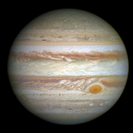

Planetary Fact Sheet
| Links | Earth | Mars | Jupiter | Saturn |
|---|---|---|---|---|
| Images of Planets |  |  |
||
| Mass (1024kg) | 5.97 | 0.642 | 1898 | 568 |
| Diameter (km) | 12,756 | 6792 | 142,984 | 120,536 |
| Length of Day (hours) | 24.0 | 24.7 | 9.9 | 10.7 |
| Distance from Sun (106km) | 149.6 | 228.0 | 778.5 | 1432.0 |
| Orbital Period (days) | 365.2 | 687.0 | 4331 | 10,747 |
| Mean Temperature (C) | 15 | -65 | -110 | -140 |
| Number of Moons | 1 | 2 | 95 | 146 |